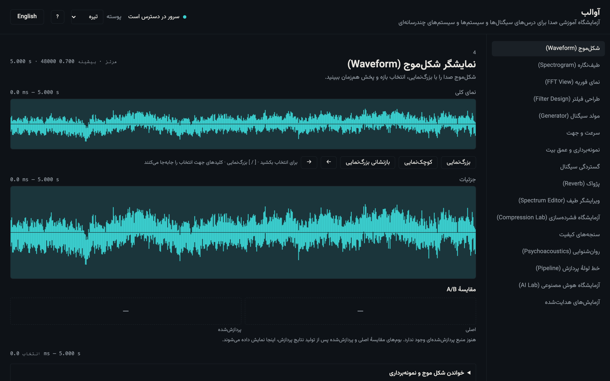
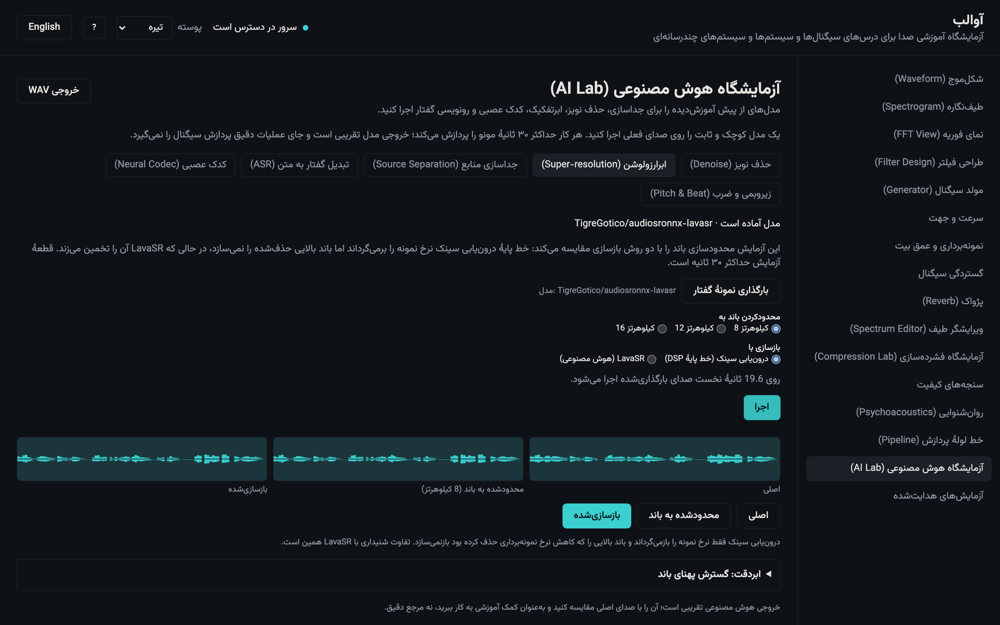

نمایش
طیفنگاره و شکلموج، اثر پارامتر را فوری نشان میدهند؛ اما فقط دیدن کافی نیست.
یک playhead مشترک، لحظه را به فرکانس و فرکانس را به لحظه گره میزند.
فایل پنجدقیقهای را نمیتوان یکجا و با جزئیات دید. نمای کلی برای جهتیابی است و نمای جزئی برای قضاوت.
نمای کلی min/max از پیش محاسبهشده؛ STFT تدریجی در Worker؛ انتخاب و playhead مشترک؛ تغییر پنجره، hop، dB و colormap.


هم تعریف O(N²) را نشان میدهیم، هم مسیر O(N log N) را؛ و هر دو را با مرجع بیرونی میسنجیم.
برای آموزش، «چه چیزی» و «چگونه» جداییناپذیرند. برای اعتماد، خروجی باید با NumPy/SciPy مقایسه شود.
DFT ساده برای تدریس؛ radix-2 Cooley–Tukey؛ Bluestein برای طول غیرتواندو؛ Float64 در هسته؛ مقایسه با کتابخانه و نمایش پروانههای N=8/16.

مدت، تکیهگاه، انرژی و قدرت؛ و اینکه بریدن و صفرافزودن چه بلایی بر طیف میآورد.
«گستردگی» فقط طول نیست: تکیهگاه غیرصفر، انرژی و قدرت متوسط، سیگنال را به انرژیای یا قدرتی طبقهبندی میکنند.
برش، صفرافزایی، شیفت، مقیاس زمانی، معکوس و گسترش متناوب؛ سپس تحلیل support و طیف با همان پنجره برای مقایسهٔ منصفانه.

دو حالت را کنار هم بگذار: تغییر سرعت با تغییر گام، و تغییر سرعت با حفظ گام.
«سرعت ۲×» یک چیز نیست. resampling مانند نوار کاست گام را هم عوض میکند؛ phase vocoder فقط زمان را تغییر میدهد.
resample: نرخ خروجی = fs/speed؛ time-stretch: STFT، انتشار فاز و WOLA؛ pitch-shift = کشش + بازنمونهبرداری برای برگرداندن طول.

کدک ادراکی بهجای وفاداری نمونهای، وفاداری شنیداری میفروشد.
ماسک فرکانسی توضیح میدهد چرا میتوان بیت کم کرد بدون اینکه تفاوت شنیده شود؛ و چرا «کیفیت» به محتوا وابسته است.
۲۵ باند Bark؛ آستانهٔ Terhardt؛ پخششدگی Schroeder؛ SMR؛ گام کوانتیزاسیون هر باند؛ و کدک MDCT ادراکی با side-info ثابت.

هر دو مدل گفتارمحورند؛ و هر دو باید با برچسب «تقریب هوش مصنوعی» نمایش داده شوند.
حذف نویز میتواند دقت ASR را کم کند؛ این یک نکتهٔ آموزشی است، نه باگ. ابربازسازی هم دادهٔ ازدسترفته را «حدس» میزند.
DPDFNet روی نمونهٔ گفتار ۴۸ کیلوهرتز؛ LavaSR با ورودی باندمحدود و خروجی گسترشیافته؛ resample صریح و بازگرداندن نرخ به UI.


میتواند دقت ASR را کم کند؛ مقایسهٔ قبل/بعد بخشی از درس است، نه یک باگ.
باند ازدسترفته «حدس» زده میشود؛ خروجی شنیدنی و آموزشی است، نه بازسازی وفادار.
هر دو مدل گفتارمحورند؛ روی موسیقی یا نویز شدید ادعای کیفیت نمیشود.